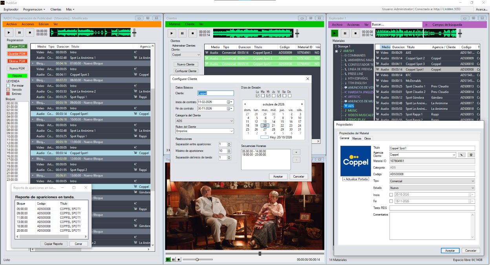

PubliSat - Gestión de tráfico comercial
PubliSat es una herramienta diseñada para emisoras que utilizan sistemas como Dinesat o HDX, permitiendo gestionar programación comercial, materiales y contenidos de forma rápida y ordenada.
Su interfaz está pensada para resultar familiar y sencilla para el usuario, facilitando el trabajo diario sin necesidad de largos períodos de adaptación.
Características principales
- Integración directa con Dinesat y HDX.
- Interfaz similar a sistemas conocidos, sin una curva de aprendizaje pronunciada.
- Gestión centralizada de clientes, materiales y programación.
- Automatización de tareas repetitivas.
- Compatible con audio, video y noticias.
Funciones principales
- Editor externo configurable para audio, video o texto.
- Agregar materiales a múltiples tandas simultáneamente.
- Modificación masiva de contratos y fechas.
- Lista de apariciones de materiales en programación.
- Importación y exportación (TXT, CSV, XML).
- Guardado automático.
- Cálculo de duración por tanda.
- Bloques organizados por horario.
- Búsqueda avanzada por múltiples campos.
Gestión de clientes
- Control de fechas de contrato.
- Asignación por días, horarios y rubros.
- Inserción automática inteligente en programación.
Interfaz del programa
Una interfaz familiar que permite acceder a las distintas herramientas de gestión desde un mismo entorno.

PubliSat - Pantallas principales del sistema
Versiones disponibles
PubliSat se encuentra disponible en ediciones para audio, video y noticias.
Descargar PubliSat Solicitar licencia trial